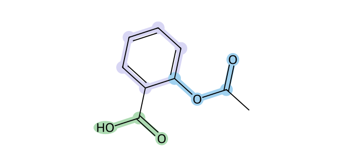
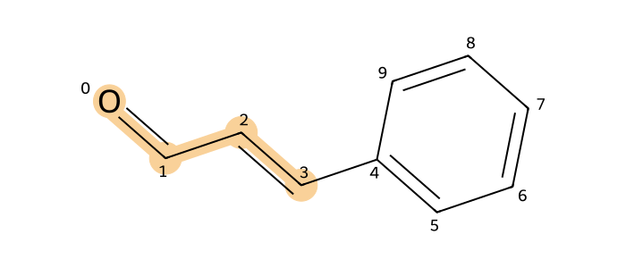
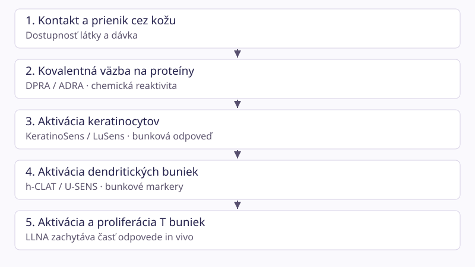
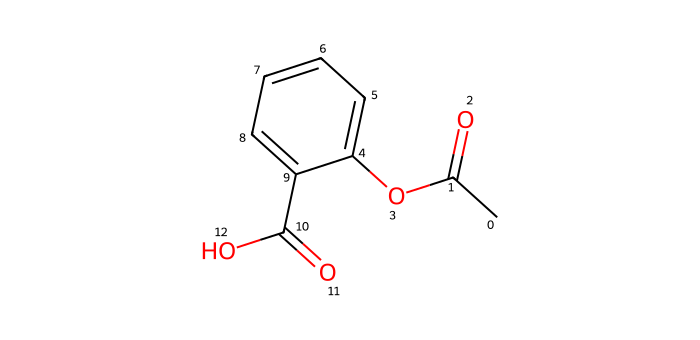

Vývoj QSAR modelov pre predikciu kožnej senzitizácie chemických látok. Zdroje overené 10. 10. 2026. Vzdelávací materiál s reálnym DPRA učebným projektom; neslúži na bezpečnostné rozhodovanie.
Čo vlastne predikuješ, čo sa musíš naučiť a ako bude vyzerať hotové riešenie.
Tvoj východiskový bod: poznáš Python, NumPy, pandas a základnú pravdepodobnosť. Základy programovania preskočíme; od začiatku vysvetľujeme chémiu, toxikológiu a metodiku QSAR. Po teórii pokračuj celým DPRA projektom a integračným laboratóriom.
Predstav si novú chemickú látku, pre ktorú ešte nemáš výsledok testu na kožnú senzitizáciu. Poznáš jej molekulovú štruktúru. QSAR model sa z príkladov už otestovaných látok učí odhadnúť konkrétny biologický výsledok. Nie je to vyhľadávač alergénov ani diagnostika človeka: je to štatistický model s vymedzeným použitím a neistotou.
Tri oblasti, ktoré musíš spojiť
Toxikológia: čo senzitizácia znamená a čo merajú jednotlivé testy.
Chemoinformatika a dáta: ako správne identifikovať molekulu, vyčistiť záznamy a premeniť štruktúru na čísla.
Strojové učenie a softvér: ako model natrénovať, poctivo otestovať a poskytnúť používateľovi interpretovateľný výsledok.
SENSIpred v jednej vete
Zostaviť auditovateľné dáta → vytvoriť reprezentácie molekúl → vybudovať modely jednotlivých testov a integrácie → overiť ich na nových látkach → pridať endpoint do TOXIpRED.
Údaje o tíme a minuloročnej platforme pochádzajú zo zadania. Verejný frontend a katalóg TOXIpRED boli následne prezreté 10. 10. 2026. Následne bol overený verejný repozitár erikrogansky/ToxiPred (commit 73ad04f). Obsahuje frontend, FastAPI backend a modelové artefakty; kompletný tréningový postup sa tým ešte nepotvrdzuje.
Ako sa učiť
Pri prvom prechode čítaj kapitoly v poradí. Po každej odpovedz na otázku, vysvetli hlavnú myšlienku vlastnými slovami a vyrieš úlohu. „Prečítané“ je pomôcka na orientáciu, nie dôkaz porozumenia. Pri druhom prechode implementuj pracovný postup a zapisuj si rozhodnutia do vlastnej poznámky.
Prvá úloha
Napíš tri odlišné ciele: predikovať výsledok DPRA, predikovať senzitizačný hazard a odhadovať silu senzibilizátora. Pri každom uveď, aké tréningové štítky potrebuješ. Nestačí, že všetky „súvisia s alergiou“.
Táto príručka ti vytvorí pevný základ a pracovný plán. Odbornosť si vybuduješ aj prácou s pôvodnými protokolmi, dátami, experimentmi a konzultáciami s odborníčkou na toxikológiu.
Kontrolná otázka
Čo je cieľom QSAR modelu?
Zobraziť odpoveď
Odhadovať definovaný endpoint zo štruktúry látky. Model odhaduje presne definovaný endpoint. Klinická diagnóza a celkové hodnotenie rizika sú iné úlohy.
2. Koža, imunita a senzitizácia
Rozlíš podráždenie, vznik imunitnej pamäti a prejav alergie.
Senzitizácia je vznik špecifickej imunitnej citlivosti. Alergická kontaktná dermatitída je klinický prejav, ktorý môže vzniknúť pri následnom kontakte senzibilizovaného človeka s alergénom. Nie každý kontakt vedie k senzitizácii a nie každý senzitizovaný človek reaguje pri každej dávke.
Podráždenie nie je alergia
Iritácia je priame poškodenie alebo zápalová reakcia tkaniva, bez potreby špecifickej imunitnej pamäti. Korózia znamená nezvratné poškodenie kože. Senzitizácia zahŕňa adaptívnu imunitu. Látka môže mať viac z týchto vlastností súčasne, ale tréningový štítok iritácie nesmieš použiť ako štítok senzitizácie.
Mechanizmus: AOP
Adverse Outcome Pathway (dráha vedúca k nepriaznivému účinku) spája molekulovú udalosť s biologickými zmenami. Pre klasický mechanizmus kožnej senzitizácie je dôležitá táto postupnosť:
Väzba na proteínyReaktívna malá molekula sa naviaže na kožný proteín; vznikne komplex rozpoznateľný imunitou.
Aktivácia keratinocytovKožné bunky spustia stresové a zápalové signály.
Aktivácia dendritických buniekBunky prezentujú antigén a sprostredkujú komunikáciu s imunitným systémom.
Aktivácia a množenie T buniekVzniká špecifická odpoveď a imunitná pamäť.
Pri opätovnej expozícii môže vzniknúť oneskorená zápalová reakcia. Reálny proces nie je len jednoduchá lineárna schéma; závisí aj od penetrácie kože, metabolizmu, dávky a biologického kontextu.
Prečo štruktúra látky pomáha
Elektróny rozhodujú o chemickej reaktivite. Elektrofil prijíma elektrónový pár, nukleofil ho poskytuje. Cysteínové a lyzínové skupiny proteínov môžu reagovať s elektrofilnými látkami. Štruktúrny alert je fragment spojený s možným mechanizmom, napríklad Michaelov akceptor. Alert je indícia; jeho prítomnosť sama nezaručuje biologický výsledok.
Prehapten sa môže zmeniť na reaktívnu látku mimo tela, napríklad oxidáciou. Prohapten potrebuje metabolickú aktiváciu. Preto nereaktivita pôvodnej molekuly v jednom bezbunkovom teste nevylučuje senzitizačný potenciál. Kovy, zmesi a neobvyklé mechanizmy vyžadujú osobitné posúdenie domény.
Hazard, sila a riziko
Hazard je schopnosť látky vyvolať účinok. Potency vyjadruje, pri akej dávke je účinok vyvolaný. Riziko sa posudzuje aj podľa skutočnej expozície. Výrok „model predikuje pozitívny hazard“ preto neznamená „výrobok v akejkoľvek koncentrácii spôsobí alergiu“.
Prečo človek môže zvládnuť prvý kontakt, ale reagovať pri ďalšom? Prečo negatívna predikcia iritácie neodpovedá na otázku alergie?
Kontrolná otázka
Čo odlišuje senzitizáciu od iritácie?
Zobraziť odpoveď
Vznik špecifickej imunitnej citlivosti. Senzitizácia súvisí so špecifickou imunitnou odpoveďou; iritácia nepotrebuje takúto pamäť.
3. Čo merajú jednotlivé testy
DPRA, ADRA, KeratinoSens, LuSens, h-CLAT, U-SENS, LLNA a humánne dáta.
Predikovať experiment znamená predikovať jeho meraný výsledok za určitých podmienok. Každý test pozoruje inú časť mechanizmu. Založ osobitný endpoint pre každý test a dokumentuj verziu protokolu.
Test
Čo pozoruje
Čo uložiť
DPRA
Úbytok syntetických peptidov s cysteínom / lyzínom po reakcii s látkou; KE1
Pozitívny výsledok sa posudzuje podľa kompletného rozhodovacieho pravidla. Pri bunkových testoch záleží aj na cytotoxicite: signál z umierajúcich buniek nemožno automaticky interpretovať ako špecifickú aktiváciu. Rozpustnosť, koeluovanie v analytike a hraničné výsledky môžu obmedziť interpretáciu. Pravidlá a hraničné intervaly prevezmi z konkrétnej verzie OECD protokolu, nie zo zjednodušeného blogu.
LLNA a EC3
V klasickom LLNA vyjadruje stimulation index odpoveď voči kontrole. EC3 je odhad koncentrácie vedúcej k trojnásobnej odpovedi. Nižšia EC3 typicky označuje vyššiu silu v tomto teste. Výsledok z myší nie je neomylná pravda o človeku. Ak EC3 chýba alebo sa účinok nedosiahol v skúšanom rozsahu, nepoužívaj nulu ako číselnú hodnotu; rozlišuj chýbanie a cenzurovanie.
Nie všetky patch testy sú rovnaké
Diagnostické patch testy u pacientov zisťujú reakciu už senzibilizovaných ľudí. Historické human predictive patch tests (napríklad HRIPT) majú iný dizajn a účel. Výber pacientov, dávka aj koncentrácia menia význam výsledku. Nespájaj ich bez anotácie do jedného „human“ stĺpca.
Typy a kurácia historických humánnych údajov: NICEATM — Human Data. Pracuj s existujúcimi dátami; táto príručka nie je návod na pokusy na ľuďoch alebo zvieratách.
Úloha na kuráciu
Dve publikácie uvádzajú pozitívny a negatívny KeratinoSens pre rovnakú látku. Najskôr porovnaj identitu, čistotu, koncentrácie, cytotoxicitu, protokol a opakovania. Až potom zvažuj konflikt štítkov.
Kontrolná otázka
Čo urobiť s nejednoznačným testom?
Zobraziť odpoveď
Zachovať samostatný stav a pravidlo spracovania. Nejednoznačné, hraničné, neplatné a chýbajúce výsledky majú odlišný význam. Uchovaj aj pôvodný záznam.
4. QSAR a základy strojového učenia
Vstup, štítok, klasifikácia, regresia, tréning a generalizácia.
QSAR = Quantitative Structure–Activity Relationship. V tomto projekte sa zo štruktúry látky vytvorí vektor príznakov X a model f(X) odhadne výsledok y. Jeden riadok modelovacej tabuľky reprezentuje jednu kurátovanú látku pre definovaný endpoint; stĺpce X sú jej príznaky, y je referenčný štítok.
Dve odlišné úlohy
Klasifikácia odhaduje triedu, napríklad pozitívny / negatívny LLNA výsledok. Regresia odhaduje číselnú veličinu, napríklad vhodne transformovanú EC3. Obe potrebujú jasne definované dáta. Percento úbytku peptidu nie je automaticky skóre celkového senzitizačného potenciálu.
Ako sa model učí
Algoritmus upravuje parametre tak, aby minimalizoval chybu na tréningových príkladoch. Pri logistickej regresii je pravdepodobnosť odvodená z váženého súčtu príznakov cez sigmoid. Rozhodovací strom opakovane delí látky podľa hodnôt príznakov. Model nevie, či je naučená súvislosť mechanistická alebo vznikla chybou pri zbere dát.
Parameter sa naučí z dát. Hyperparameter, napríklad hĺbka stromu, určuje správanie učenia a vyberá sa vo validácii. Loss je optimalizačná funkcia; metrika je ukazovateľ, ktorým posudzuješ výsledok. Nemusia byť totožné.
Preučenie a nedoučenie
Model s priveľkou flexibilitou sa môže naučiť šum a konkrétne príklady: tréningový výkon bude výborný, ale nové molekuly predikuje zle. To je overfitting. Príliš jednoduchý model môže prehliadnuť skutočné vzťahy: underfitting. Pomáhajú regularizácia, obmedzenie zložitosti a validácia zodpovedajúca použitiu.
Čo je dobrý baseline
Najprv porovnaj model s triviálnym prediktorom väčšinovej triedy a jednoduchou logistickou regresiou. Ak je 80 % látok pozitívnych, prediktor „všetko pozitívne“ dosiahne accuracy 80 %. Jeho specificita bude nula. Samotné vysoké percento správnych odpovedí preto nestačí.
Príznak smie obsahovať iba informáciu dostupnú v čase predikcie. Ak predikuješ LLNA iba zo štruktúry, vloženie experimentálneho h-CLAT do X mení úlohu na integráciu experimentálnych dát. To môže byť legitímne, ale musí byť pomenované a použiteľné aj pri nasadení.
Vlastnými slovami
Vysvetli rozdiel medzi učením modelu a použitím hotového modelu. Potom navrhni triviálny baseline pre binárny endpoint a povedz, čo by ťa presvedčilo, že tvoj model je lepší.
Kontrolná otázka
Ktorý vstup je vhodný pre čisto štruktúrny QSAR?
Zobraziť odpoveď
Molekulový fingerprint. Fingerprint sa dá vypočítať z novej štruktúry. Vloženie cieľového výsledku do vstupov je leakage.
5. Molekuly, SMILES a identita
Prečo názov látky ani CAS nestačí a prečo canonical SMILES nie je kompletná kurácia.
Molekula sa dá v počítači chápať ako graf: atómy sú uzly a väzby sú hrany. Vlastnosti závisia aj od typu väzieb, náboja, aromatickosti a priestorového usporiadania. Rovnaký sumárny vzorec môže patriť rôznym molekulám.
Ako čítať SMILES
CCO zapisuje etanol: uhlík – uhlík – kyslík. CC(=O)O zapisuje kyselinu octovú; zátvorky znamenajú vetvenie, = dvojitú väzbu. c1ccccc1 je aromatický benzénový kruh; malé písmená označujú aromatické atómy a čísla uzavretie kruhu. Bodka v [Na+].[Cl-] oddeľuje komponenty. @ / @@ zachytávajú lokálnu stereochémiu.
SMILES je zápis štruktúry, nie veta ani jednoznačná obchodná identita. Viac platných zápisov môže reprezentovať rovnaký graf. Canonical SMILES ho podľa algoritmu knižnice prevedie na štandardný zápis, ale sám nevyrieši soľ, tautomerizáciu, protonáciu alebo chybnú identifikáciu.
Politika štandardizácie
Parsuj štruktúru a zachyť chybu; neplatný zápis nesmie vytvoriť nulový vektor.
Rozlišuj jednu látku, soľ a zmes. Výber najväčšieho fragmentu musí byť odôvodnený, nie automatický pri každom zázname.
Urči pravidlá náboja, tautomerov a stereochémie. Zachovaj pôvodný zápis a vykonané transformácie.
Vytvor stabilný interný identifikátor štandardizovanej entity a mapovanie k pôvodnému názvu, CAS a zdroju.
Kontroluj duplicity aj blízke varianty. Zmenené pravidlá štandardizácie môžu zmeniť fingerprint a predikciu.
CAS je registračný identifikátor, ktorý pomáha dohľadať záznam. Nie je bezpečné predpokladať, že každý CAS má jednu ľahko dostupnú správnu SMILES štruktúru. UVCB sú látky neznámeho alebo premenlivého zloženia; reprezentovať ich jednou malou molekulou môže byť nesprávne. Podobný problém vzniká pri polyméroch a zmesiach.
Python: prvý kontakt s RDKit
from rdkit import Chem
from rdkit.Chem import Descriptors
mol = Chem.MolFromSmiles("CCO")
if mol is None:
raise ValueError("Neplatný SMILES")
print(Chem.MolToSmiles(mol, isomericSmiles=True))
print(Descriptors.MolWt(mol)) # približne 46.07
Výpočet hmotnosti nie je toxikologická predikcia. Tento krok len ukazuje, ako text previesť na chemický objekt. Kód spúšťaj vo vlastnom Python prostredí; webstránka Python nevykonáva.
Porovnaj canonical SMILES pre CCO a OCC. Potom vysvetli, prečo odstránenie fragmentu zo soli nie je rovnaký krok ako canonicalizácia.
Kontrolná otázka
Čo vyrieši canonical SMILES?
Zobraziť odpoveď
Štandardný zápis grafu podľa algoritmu knižnice. Canonicalizácia zjednotí zápis; chemickú a biologickú identitu treba naďalej kurátovať.
6. Zdroje dát a databázový návrh
Ako získavať dáta s pôvodom, kvalitou a možnosťou neskoršieho auditu.
Dáta sú hlavná časť vedeckého výsledku. Tisíc stiahnutých riadkov nie je tisíc nezávislých látok. Jedna štúdia môže byť citovaná vo viacerých databázach; bez sledovania pôvodu ju započítaš opakovane.
Kde začať
SkinSensDB: publikovaná kurácia AOP súvisiacich testov. Článok použiješ na pochopenie schémy; dostupnosť pôvodného webového rozhrania a exportov over pri zbere.
NICEATM: historická LLNA databáza a humánne údaje, ako aj integrované chemické prostredie. Použi konkrétny export a dátum, nie iba odkaz na úvodnú stránku.
ECHA REACH záznamy: študijné sumáre môžu obsahovať protokol, kvalitu a interpretáciu. Verejný prístup neznamená automaticky voľné redistribuovanie všetkého obsahu.
Cosmetics Europe: publikovaný súbor obsahuje viac testov a referenčné dáta; dostupnosť príloh, licenciu a verziu treba zaznamenať.
EPA CompTox: pomáha mapovať identifikátory a štruktúry. Samotná prítomnosť látky v Dashboarde nie je pozitívny senzitizačný výsledok.
Oddel substance (identita), structure (pôvodná a štandardizovaná štruktúra), study (metóda a zdroj) a result (meranie a interpretácia). Jedna látka má viac štúdií a jedna štúdia viac výsledkov. Až z tohto archívu generuj modelovaciu tabuľku.
Pri číselných výsledkoch oddeľ hodnotu od jednotky. Zaznamenaj aj modifikátory ako < / >, rozpúšťadlo a dávku, ak sú dostupné. Označ, či si štítok prevzal od autora alebo odvodil vlastným pravidlom.
Reprodukovateľný zber
Ulož nemenný snapshot pôvodných dát, verziu exportu, kontrolný súčet, dátový slovník a podmienky použitia. Kurácia má byť skript a záznam rozhodnutí. Manuálne opravy ulož ako samostatnú tabuľku s dôvodom, nie ako tichú zmenu pôvodného súboru.
Zverejni počty po každom kroku: záznamy → jedinečné štúdie → identifikované látky → platné štruktúry → interpretovateľné výsledky. Kontroluj rozloženie tried pre každý endpoint a prieniky látok medzi testami.
Prvý dátový výstup
Vyber jeden export. Priprav dátový slovník a päť úplne vystopovateľných záznamov až k pôvodnej štúdii. Nezačni modelom, kým nevieš vysvetliť ich identitu a štítky.
Kontrolná otázka
Tá istá štúdia je v dvoch databázach. Čo robiť?
Zobraziť odpoveď
Deduplicovať podľa pôvodnej štúdie a zachovať oba odkazy. Počet zdrojových webov nie je počet nezávislých experimentov.
7. Kurácia a chýbajúce výsledky
Ako vytvoriť štítky bez zamieňania chýbajúceho, negatívneho a neplatného.
Kurácia nie je len odstránenie prázdnych polí. Je to kontrola, či záznamy znamenajú to, čo si myslíš, že znamenajú. Pred tréningom schváľ s vedúcou definíciu endpointu a rozhodovacie pravidlá.
Od záznamu k štítku
Potvrď identitu a rozsah podporovaných látok.
Over metódu, jej variant a platnosť experimentu.
Prevezmi alebo reprodukuj interpretáciu podľa príslušného protokolu.
Zachovaj negatívny, pozitívny, hraničný, nejednoznačný, neplatný a nezmeraný stav.
Vytvor jednu modelovaciu reprezentáciu pre látku a endpoint podľa vopred zapísanej politiky.
Konflikty sa nesmú riešiť potichu
Rozpor môže vzniknúť dávkou, čistotou, soľou, oxidáciou, protokolom aj experimentálnym šumom. Najprv odlíš skutočné nezávislé štúdie od opakovaných citácií. Potom použiješ vopred určenú hierarchiu kvality alebo označíš konflikt. Väčšinové hlasovanie je len jedna možnosť a nesmie byť skreslené duplicitami.
Urob citlivostnú analýzu: natrénuj variant bez konfliktných látok a variant s odôvodnenou agregáciou. Reportuj, ako sa mení veľkosť dát, zloženie a výkon. Vylúčenie konfliktov môže vytvoriť ľahší dataset a nadhodnotiť použiteľnosť.
Chýbajúci endpoint nie je nula
Ak látka nemá h-CLAT meranie, nevieš, či by bola negatívna. V multi-task modeli použiješ masku: strata sa počíta iba pre skutočne pozorované výsledky. Imputácia vstupného deskriptora a doplnenie neznámeho toxikologického štítku sú dve odlišné veci.
y = [1, chýba, 0]
mask = [1, 0, 1]
loss = súčet(mask × strata_pre_endpoint) / súčet(mask)
Vzorec je didaktický. V implementácii najskôr bezpečne vyber pozorované hodnoty; násobenie nuly hodnotou NaN môže stále vytvoriť NaN.
Dáta môžu chýbať systematicky
Niektoré skupiny sa testujú častejšie než iné. Napríklad látky s podozrením na reaktivitu môžu mať viac následných testov. To je selekčné skreslenie. Model sa učí zo zdokumentovaného výberu, nie z náhodnej vzorky všetkých možných chemických látok. Vizualizuj pokrytie testov a chemických skupín.
Rozhodovacia tabuľka
Pre každú z kategórií positive, negative, borderline, inconclusive, invalid a missing stanov: zostáva v archíve? vstupuje do binárneho tréningu? s akým štítkom a dôvodom? Urob to skôr, než uvidíš výkon modelu.
Kontrolná otázka
Látka nemá DPRA meranie. Aký je jej štítok?
Zobraziť odpoveď
Neznámy; nezapočíta sa do supervised straty pre DPRA. Absencia merania nedokazuje negatívny výsledok.
8. Deskriptory a fingerprinty
Ako molekulový graf zmeníš na vstup pre model a čo pri tom stratíš.
Deskriptor je vypočítaná vlastnosť molekuly, napríklad molekulová hmotnosť, počet kruhov, počet donorov vodíkovej väzby, TPSA alebo odhad lipofility logP. Fingerprint je vektor kódujúci prítomnosť alebo počty štruktúrnych vzorov. Oba sú reprezentácie, nie experimentálne dôkazy senzitizácie.
Začni dvoma reprezentáciami
Pre baseline porovnaj malú sadu stabilných 2D deskriptorov a Morgan fingerprint. Morgan postupne opisuje lokálne okolie atómov. Radius 2 sa často spája s označením ECFP4, no konkrétna implementácia a nastavenia musia byť presne uvedené. Dĺžka 2048 bitov je experimentálne nastavenie, nie univerzálne optimum.
Bitový fingerprint stráca časť informácie a hashovanie môže mapovať rôzne fragmenty na rovnaký bit. Preto dôležitosť bitu nie je vždy jednoznačne dôležitosť jednej funkčnej skupiny. Count fingerprint navyše zachytáva opakovania fragmentov.
Mordred alebo PaDEL
Široká sada deskriptorov môže priniesť dodatočné informácie, ale aj nedefinované hodnoty, korelované stĺpce a numerickú nestabilitu. Zvolený nástroj, presnú verziu, 2D / 3D nastavenia a zoznam stĺpcov ulož s modelom. Pred nasadením over kompatibilitu a údržbu závislostí; odporúčaná technológia zo zadania nie je povinnosť použiť všetko naraz.
Bezpečné predspracovanie
Odstránenie konštantných stĺpcov a výber príznakov nauč iba na tréningovom folde.
Chýbajúce deskriptory imputuj pravidlom naučeným z tréningu; neplatnú molekulu takto „neopravuj“.
Škálovanie je dôležité pre SVM, logistickú regresiu a neurónové siete. Stromové modely ho spravidla nepotrebujú.
Zachovaj rovnaké poradie stĺpcov v tréningu aj pri predikcii.
3D deskriptory závisia od konforméru a jeho generovania. Na prvý baseline sú 2D vlastnosti jednoduchšie reprodukovateľné.
Tanimotova podobnosť
Pre bitové vektory A a B: T = |A ∩ B| / |A ∪ B|. Ide o podobnosť reprezentácií, nie percento biologickej zhody. Výsledok závisí od radiusu, dĺžky aj typu fingerprintu. Univerzálny prah domény neexistuje; musíš ho validovať.
Na tých istých splitoch porovnaj deskriptory + random forest a Morgan + logistickú regresiu. Sleduj výkon, kalibráciu, čas a pokrytie. Zmenu reprezentácie nezamieňaj so zmenou testovacích látok.
Kontrolná otázka
Kde naučíš imputáciu a škálovanie?
Zobraziť odpoveď
Iba na tréningových dátach každého foldu. Predspracovanie je súčasť modelu. Validácia a test nesmú ovplyvniť jeho naučené pravidlá.
9. Delenie dát a únik informácií
Najdôležitejšia ochrana pred modelom, ktorý vyzerá lepšie, než je.
Generalizácia znamená výkon na nových látkach. Test je dôveryhodný iba vtedy, keď neovplyvnil žiadne tréningové rozhodnutie. Pred ladením preto oddel a uzamkni testovaciu množinu.
Tri vrstvy
Tréning: učenie parametrov modelu.
Validácia / vnútorná CV: výber hyperparametrov, prahu a spôsobu kalibrácie.
Cross-validation (CV) opakuje tréning na viacerých rozdeleniach. Pri nested CV vnútorná slučka ladí a vonkajšia hodnotí celý výberový proces. Rovnaké pravidlá predspracovania sa nanovo učia v každom vnútornom tréningu.
Prečo náhodný split môže klamať
Veľmi podobné analógy môžu skončiť na oboch stranách. Model potom rozpoznáva blízke susedstvo, nie nové chemické oblasti. Náhodný split je užitočná doplnková analýza, ale na ambiciózne tvrdenie o nových chemotypoch nestačí.
Scaffold split oddeľuje molekulové kostry. Cluster split oddeľuje skupiny podobných fingerprintov. Časový split trénuje na starších a testuje na novších štúdiách. Source split skúša prenos medzi zdrojmi alebo laboratóriami. Vyber podľa plánovaného použitia a reportuj slabiny každej stratégie.
Scaffold nie je dokonalý: acyklické látky často nemajú informatívnu kruhovú kostru a jednoduché delenie ich môže nahromadiť do jedného bloku. Skontroluj veľkosti skupín, zastúpenie tried a chemickú podobnosť medzi splitmi. Pri malých dátach nie je každá kombinácia foldov uskutočniteľná.
Najčastejšie leakage
Tú istú látku alebo jej duplicitnú štúdiu máš v tréningu aj teste.
Škáluješ alebo vyberáš príznaky pred rozdelením.
Oversampling / SMOTE robíš na celom datasete pred CV.
Vyberáš prah podľa výsledkov externého testu.
Do konsenzu vstupujú predikcie modelov trénovaných na tej istej hodnotenej látke.
V multi-task tréningu necháš testovaciu látku s iným známym endpointom a tvrdíš úplne nové molekuly.
Pre cold-compound hodnotenie musí testovacia látka zostať mimo tréningu všetkých endpointov. Dopĺňanie endpointu pre už známu látku je odlišná úloha a musí mať samostatný protokol.
Vytvor uložený súbor splits.csv: identita, skupina a train / validation / test. Over nulový prienik identít a pôvodných štúdií. Split nezmeň len preto, že na ňom model nevyzerá dobre.
Kontrolná otázka
Model ladíš opakovane podľa externého testu. Čo sa stalo?
Zobraziť odpoveď
Test sa stal súčasťou vývoja a stratil nezávislosť. Aj výber podľa testového skóre prenáša informáciu do modelu. Na nové poctivé hodnotenie potrebuješ nedotknuté dáta.
10. Modely a férové experimenty
Od baseline po boosting a neurónové siete; ako rozhodnúť, čo má zmysel.
Výber algoritmu nie je súťaž o najnovší názov. Hľadáš najjednoduchší postup, ktorý preukázateľne funguje na tvojom použití. Porovnávaj rovnaké látky, splity, endpointy a pravidlá vyhodnotenia.
Model
Prečo ho skúsiť
Čo kontrolovať
Logistická regresia
Silný, rýchly baseline na fingerprintoch
Regularizácia, škálovanie podľa reprezentácie, kalibrácia
Random forest
Nelineárne vzťahy v deskriptoroch; odolný prvý model
Hĺbka, veľkosť listov, triedne váhy
SVM
Vysokodimenzionálne príznaky a menšie dáta
Škálovanie, C, kernel, gamma, náklady
XGBoost / LightGBM
Boosting postupne opravuje chyby predošlých stromov
Learning rate, počet stromov, hĺbka, regularizácia
MLP / multi-task sieť
Spoločná reprezentácia naprieč endpointmi
Málo dát, dropout, early stopping, negatívny transfer
GNN
Učí reprezentáciu molekulového grafu
Vyššia zložitosť a potreba dát; baseline môže byť lepší
Minimum experimentálneho protokolu
Vyber primárnu metriku pred experimentom, napríklad balanced accuracy doplnenú citlivosťou.
Použi rovnaké skupinové foldy pre všetky modely.
Priraď porovnateľný rozpočet na ladenie; netunuj jeden model stovkami pokusov a druhý jedným.
Early stopping pracuje s vnútornou validáciou, nie s finálnym testom.
Ulož konfiguráciu, seed, verzie, split, výsledky a artefakt modelu.
Vyber postup vo vývojových dátach a až potom vyhodnoť test.
Nevyvážené triedy
Triedne váhy menia penalizáciu chyby, nie skutočný počet pozorovaní. Resampling rob iba vo vnútri tréningu. Syntetické interpolácie deskriptorov nemusia predstavovať platné molekuly; preto pri chemických dátach nepreberaj SMOTE mechanicky. Porovnaj aj jednoduché triedne váhy a vhodný prah.
Kedy má hlboké učenie zmysel
Ak máš málo kvalitných látok a mnoho príznakov, malá neurónová sieť môže byť nestabilná. PyTorch alebo TensorFlow sú nástroje, nie argument lepšieho výkonu. Najprv preukáž prínos oproti klasickým modelom. Pri transfer learningu dokumentuj pôvod predtrénovaných dát a možné prekrývanie s testom.
Ablácia
Ablation study odstráni alebo zmení jednu zložku: deskriptory verzus fingerprinty, single-task verzus multi-task, bez konfliktných štítkov verzus s agregáciou. Pomôže zistiť, čo skutočne prináša hodnotu. Rozdiel medzi dvoma náhodnými seedmi nemusí byť vedecký prínos.
Experimentálny denník
Pre každý pokus zapíš hypotézu pred spustením. Príklad: „Triedne váhy zvýšia citlivosť, ale môžu znížiť specificitu.“ Po výsledku porovnaj všetky relevantné metriky, nie iba tú, ktorá stúpla.
Kontrolná otázka
Kedy použiješ externý test na early stopping?
Zobraziť odpoveď
Nikdy v rámci nezávislého finálneho testu. Early stopping je výber modelu a patrí do vývojovej validácie.
11. Metriky a rozhodovací prah
Porozumej chybám modelu a vyskúšaj si ich na vlastnej matici zámen.
Definuj pozitívnu triedu: tu znamená senzitizujúca / pozitívna podľa konkrétneho referenčného endpointu. TP sú správne pozitívne, TN správne negatívne, FP nesprávne pozitívne a FN nesprávne negatívne predikcie.
Specificity = TN / (TN + FP): koľko referenčne negatívnych látok správne odmietneš.
Precision = TP / (TP + FP): koľko tvojich pozitívnych výrokov je správnych. Závisí od zastúpenia tried.
Balanced accuracy: priemer sensitivity a specificity; obe triedy majú rovnakú váhu.
F1: harmonický priemer precision a recall; nezohľadňuje TN.
MCC: súhrn celej matice zámen; od −1 po 1, ak je definovaný.
Skóre a prah
Model môže vydať skóre 0.72. Trieda vznikne až porovnaním s prahom. Zníženie prahu typicky zvýši citlivosť a počet falošne pozitívnych výsledkov. Prah vyber podľa účelu a nákladov chýb iba na vývojových dátach. Hodnota 0.5 je konvencia, nie prírodný zákon.
ROC-AUC hodnotí poradie pozitívnych a negatívnych naprieč prahmi; nehovorí, že skóre 0.8 je správna 80 % pravdepodobnosť. PR krivka ukazuje precision proti recall a je dôležitá pri vzácnej pozitívnej triede. Uveď, či reportuješ average precision alebo konkrétny výpočet plochy; tieto čísla nie sú vždy rovnaké.
Neistota výkonu
Reportuj počet látok, triedy, intervaly neistoty a všetky relevantné metriky. Pri bootstrapovaní rešpektuj jednotku nezávislosti: látku alebo chemickú skupinu, nie jednotlivé duplicitné merania. Pri párovom porovnaní modelov používaj rovnaké resamplované testovacie látky.
Regresiu hodnotíš napríklad MAE, RMSE a grafom rezíduí. Pri log-transformovanej EC3 vysvetli jednotky aj transformáciu a skontroluj cenzurované hodnoty. R² samo nevysvetlí veľkosť ani bezpečnostný dopad chyby.
Na obhajobu
Zostav príklad, kde accuracy presiahne 90 %, ale model nezachytí ani jednu pozitívnu látku. Potom vysvetli, prečo testovací výkon nie je istota správnosti jednej konkrétnej predikcie.
Kontrolná otázka
Čo znamená vysoké ROC-AUC?
Zobraziť odpoveď
Dobré rozlišovanie / poradie tried naprieč prahmi. Diskriminácia, kalibrácia a výkon pri jednom prahu sú samostatné vlastnosti.
12. Konsenzus, multi-task a defined approaches
Ako kombinovať informácie bez mechanického hlasovania a bez leakage.
V projekte môžeš kombinovať tri veci: výstupy viacerých algoritmov pre rovnaký endpoint, predikcie rôznych experimentálnych endpointov alebo skutočne namerané výsledky rôznych testov. Nie sú zameniteľné.
Single-task a multi-task
Single-task model má jednu cieľovú premennú. Multi-task sieť má spoločnú reprezentáciu molekuly a viac výstupných hláv, napríklad DPRA, KeratinoSens, h-CLAT a LLNA. Pre každý výstup potrebuje vlastný štítok, masku chýbania a metriku.
Spoločné učenie môže pomôcť, keď endpointy zdieľajú informácie. Môže aj škodiť: veľký alebo hlučný endpoint ovládne učenie a výkon menšieho klesne. To je negatívny transfer. Váhy strát, balanced sampling a ablačné experimenty vyberaj vo validácii. Každý výstup porovnaj so samostatným modelom.
Konsenzus modelov
Priemerovanie pravdepodobností je rozumné iba pri rovnakom cieľovom význame a vhodnej kalibrácii. Priemer „pravdepodobnosti DPRA“ a „pravdepodobnosti LLNA“ automaticky nevytvorí pravdepodobnosť alergie u človeka. Pre integračný model stanov referenčný cieľ a vyhodnoť ho proti tomuto cieľu.
Stacking bez úniku informácií
Meta-model sa učí z predikcií základných modelov. V tréningu meta-modelu musia byť out-of-fold (OOF) predikcie: každá látka dostane predikciu z modelu, ktorý ju v danom kroku nevidel. Pri chemickom delení musí byť vynechaná celá príslušná skupina a pri cold-compound nastavení všetky endpointy látky.
Pri finálnom nasadení sa základné modely pretrénujú na vývojových dátach. Kalibrácia, masky dostupnosti a pravidlá kombinovania musia byť rovnaké ako vo validovanom postupe. Uveď, čo sa stane, keď jeden model zlyhá alebo je mimo domény.
Čo znamená OECD 497
Defined approach (DA) má vopred určené zdroje informácií a pevný postup interpretácie. Nie je to ľubovoľný ensemble. OECD 497 zahŕňa prístupy pre hazard, silu aj kvantitatívny východiskový bod; vyber správnu časť a aktuálnu verziu. Bežne uvádzané „2 z 3“ kombinuje stanovené experimentálne testy za konkrétnych podmienok. Ak experimenty nahradíš QSAR predikciami, nevzniká tým automaticky validovaná DA.
Presné pravidlá, obmedzenia a verzie: OECD 497. Zadanie odkazuje na rok 2021; pri realizácii používaj aktuálne vydanie a zaznamenaj ho.
Navrhni tri experimenty
Porovnaj single-task modely, multi-task model a integračný meta-model. Pre každý popíš vstupy, cieľ, chýbajúce dáta a ochranu testovacích látok. Tvrdenie „kombinácia je lepšia“ dolož výsledkami.
Kontrolná otázka
Čím trénuješ meta-model pri stackingu?
Zobraziť odpoveď
OOF predikciami so správnym skupinovým delením. OOF predikcie chránia meta-model pred učením z príliš optimistických tréningových výstupov.
13. Doména, kalibrácia a vysvetlenie
Ako povedať nielen výsledok, ale aj kde a prečo mu možno dôverovať.
Model musí vedieť povedať aj „na túto látku nemám dostatočnú oporu“. Skóre nie je automaticky dôvera a podobnosť s jednou molekulou nie je záruka správnosti.
Doména aplikovateľnosti (AD)
AD vymedzuje podporovaný priestor látok a predikcií. Kombinuj chemické obmedzenia (napríklad podporované elementy, jedna štruktúra), rozsahy deskriptorov a podobnosť s tréningovými látkami. Pri fingerprintoch je jednoduchým východiskom maximálna alebo k-nearest Tanimotova podobnosť.
Prahy odvoď na vývojových dátach a ukáž výkon v jednotlivých pásmach podobnosti. Pred testom zafixuj pravidlo. Zároveň reportuj coverage: podiel látok, pre ktoré model vydáva použiteľnú predikciu. Model, ktorý odmietne takmer všetko, môže na zvyšku vyzerať presne, ale jeho praktická hodnota je malá.
Kalibrácia
Pri kalibrovanom skóre majú predikcie okolo 0.8 v porovnateľnej populácii približne 80 % pozitívnych referenčných výsledkov. To nie je 80 % istota mechanizmu ani 80 % riziko alergie pre človeka. Kalibráciu hodnotíš reliability diagramom, Brier skóre a napríklad log loss. Fit kalibrátora nesmie používať finálny test.
Sigmoidná kalibrácia býva vhodným jednoduchým kandidátom; izotonická je flexibilnejšia a môže potrebovať viac dát. Skontroluj skupinové delenie v kalibračnej CV. Zmena zastúpenia tried alebo chemického priestoru v nasadení môže kalibráciu narušiť.
Druhy neistoty
Aleatorická neistota súvisí so šumom meraní a variabilitou výsledku. Epistemická neistota súvisí s nedostatkom poznatkov modelu v danom priestore. Rozptyl ensemble môže byť pomocný signál, ale nie je automaticky kalibrovaný interval. Ani zhoda všetkých modelov neodhalí spoločné skreslenie dát.
Conformal prediction môže za príslušných predpokladov poskytnúť predikčné množiny s riadeným pokrytím. Nie je to záruka pri ľubovoľnom chemickom posune; kalibračná množina, predpoklady a skutočné pokrytie musia byť reportované.
Interpretovateľnosť
Permutation importance hodnotí zmenu výkonu pri premiešaní príznaku. SHAP priraďuje príznakom príspevky k výstupu zvoleného modelu. Korelované deskriptory a hashované fingerprinty komplikujú interpretáciu. Tvrdenie „SHAP ukazuje príčinu alergie“ je nesprávne: vysvetľuje správanie modelu, nie dokázaný biologický mechanizmus.
Pre používateľa ukáž endpoint, triedu, skóre, prah, AD stav, podobné tréningové látky, obmedzenia a verziu modelu. Chemické alerty doplň ako mechanistický kontext, jasne oddelený od štatistického vysvetlenia.
Situácia na obhajobu
Model dá skóre 0.95, ale látka má nepodporovaný kov a žiadnych blízkych susedov. Navrhni výsledok rozhrania: odmietnutie alebo predikcia mimo domény s výrazne obmedzenou interpretáciou podľa vopred stanovenej politiky.
Kontrolná otázka
Čo dokazuje vysoká hodnota SHAP?
Zobraziť odpoveď
Príznak prispel k výstupu daného modelu. Vysvetlenie modelu nie je kauzálny dôkaz.
14. OECD, regulácia a porovnanie nástrojov
Čo potrebuje vedecky obhájiteľný model a prečo dobré skóre nestačí.
OECD definuje päť princípov pre hodnotenie QSAR: definovaný endpoint, jednoznačný algoritmus, definovaná doména aplikovateľnosti, vhodné ukazovatele fitu / robustnosti / prediktivity a mechanistická interpretácia, ak je možná. Krížová validácia sama nesplní všetko.
Endpoint: presne popíš biologický význam, zdroj štítkov, metódu a jednotky.
Algoritmus: ulož kód, reprezentáciu, hyperparametre, predspracovanie a pravidlo rozhodnutia.
AD: publikuj hranice, algoritmus posúdenia a pokrytie.
Validácia: dolož nezávislosť splitov, CV, testové výsledky, neistotu a baseline.
Mechanizmus: diskutuj súvislosť so známou reaktivitou a AOP, ale priznaj, kde mechanistické vysvetlenie chýba.
QMRF opisuje model; QPRF dokumentuje konkrétnu predikciu. Aktuálny regulačný rámec a požadovanú formu reportu over pre zamýšľané použitie. Ak splníš vedecké princípy, stále to neznamená automatické schválenie všetkých predikcií pre REACH.
REACH a kozmetika: oprava zjednodušenia
REACH a nariadenie o kozmetických výrobkoch nie sú ten istý predpis. Hlavným kozmetickým rámcom je nariadenie (ES) č. 1223/2009. Rok 2013 označuje dokončenie etapového zákazu uvádzania kozmetiky testovanej na zvieratách na trh pre kozmetické účely; zákazy testovania výrobkov a zložiek mali skoršie termíny. Povinnosti podľa REACH môžu súvisieť aj s pracovníkmi a inými použitiami látok.
Toolbox podporuje napríklad kategorizáciu a read-across; nie je to jeden univerzálny model. Vo VEGA vyber konkrétny model a jeho endpoint. Zaznamenaj verziu, podporované látky, AD, abstencie a výstupy. Benchmark priprav na rovnakých testovacích látkach.
Ukáž výkon na spoločnom pokrytí aj podiel všetkých látok, ktoré nástroj zvládne. Abstenciu neprepisuj na negatívny výsledok. Preskúmaj, či testovacie látky alebo ich zdroje neboli v tréningu porovnávaného nástroja. Ak to nevieš overiť, otvorene obmedz tvrdenie o nezávislom porovnaní.
Kontrolná otázka
Priprav jednu stranu model card: použitie, nepodporované prípady, dáta, protokol validácie, AD, metriky a obmedzenia. Má umožniť kolegovi model kriticky posúdiť bez rozhovoru s tebou.
Kontrolná otázka
Stačí vysoká accuracy na regulačnú prijateľnosť?
Zobraziť odpoveď
Nie; treba posúdiť endpoint, algoritmus, AD, validáciu a konkrétne použitie. Výkon je len časť dôkazov. Prijateľnosť závisí aj od modelu, konkrétnej predikcie a regulačného kontextu.
Pre váš tím: túto kapitolu používaj ako referenciu chemoinformatického workflow, nie kurz syntaxe. Praktické kroky s reálnymi dátami sú v DPRA projekte.
Stiahni baseline.py a requirements.txt. Skript je tréningová kostra pre tvoje dáta, nie hotový validovaný senzitizačný model. Žiadne výsledky ani tréningové látky nie sú vymyslené.
label označuje jeden presne definovaný endpoint. group musí zoskupiť látky podľa zvolenej chemickej stratégie, aby analogické skupiny nepretekali medzi tréningom a testom. Skript očakáva jednu kurátovanú identitu na riadok; rozpory a opakované štúdie vyrieš v dátovej vrstve.
Skript vypočíta Morgan fingerprint, urobí jeden skupinový holdout, porovná väčšinový baseline a logistickú regresiu, uloží identifikátory splitu aj metriky. Skóre vyhodnocuje pri pevnom prahu 0.5 bez ladenia. Ak jedna časť neobsahuje obe triedy, zastaví sa namiesto predstierania platného hodnotenia.
Čo táto kostra ešte nerobí
Negeneruje alebo nevaliduje chemické skupiny; pripravíš ich samostatne.
Nerobí nested CV, hyperparameter tuning, AD ani kalibráciu.
Nezamieňa tento holdout za nezávislý externý dataset.
Nevytvára regulačný report alebo hotové produkčné API.
Kostra používa súčasné RDKit API rdFingerprintGenerator.GetMorganGenerator a scikit-learn. Verzie v požiadavkách sú rozsahy kompatibility; po úspešnom nastavení zmraz presné verzie a ulož ich s experimentom. Náhodný seed pomáha opakovateľnosti, ale sám negarantuje totožnosť naprieč všetkými systémami.
Ďalšie kroky
Rozšír kostru o vývojové skupinové foldy a výber hyperparametrov. Ulož out-of-fold predikcie pre kalibráciu a prípadný stacking. AD odvoď iba z vývojových dát. Nakoniec vyhodnoť vopred vybrané modely na uzamknutom teste. Pre každý endpoint drž oddelené štítky a metriky.
Reprodukovateľnosť
Nech spoluhráč spustí rovnaký experiment z čistého prostredia. Porovnajte kontrolný súčet vstupu, identifikátory splitu, verzie knižníc a metriky. Odlišné výsledky sa nesnaž skryť: zisti ich príčinu.
Kontrolná otázka
Čo musí znamenať stĺpec label?
Zobraziť odpoveď
Jeden presne definovaný a kurátovaný endpoint. Bez jednoznačného cieľa nevieš interpretovať, čo sa model naučil.
16. Ako funguje existujúci TOXIpRED
Overená platforma, jej modely a konkrétne miesto pre SENSIpred.
TOXIpRED už je fungujúca aplikácia. SENSIpred má rozšíriť jej modely a pracovný tok o kožnú senzitizáciu. Nasledujúce zistenia pochádzajú z webu, verejného frontendového JavaScriptu a read-only katalógu modelov, prezretých 10. 10. 2026. Nie sú auditom tréningového kódu.
Čo dnes existuje
Katalóg uvádza osem modelov: dva pre koróziu, dva pre iritáciu a štyri pre fototoxicitu. Rozlišujú experimentálne systémy a používajú XGBoost, gradient boosting, stacking alebo SVM. Ich výsledky nie sú štítkami senzitizácie.
V rozhraní môže používateľ zadať SMILES, CAS alebo názov, nakresliť molekulu a pracovať s viacerými vstupmi. Predikcia sa spracúva ako úloha: zadanie → sledovanie stavu → výsledok → interpretácia a export. Pri CAS a názve treba navyše skontrolovať, či systém vyriešil správnu štruktúru.
Čo vieme z kódu
Verejný frontend používa Vue/Quasar a HTTP klienta Axios s prefixom /api. Katalóg načíta z /api/models. Existujú modelové metadáta, napríklad test_type, prediction_target, classification_threshold a features_in_spec. Frontend sleduje úlohy cez server-sent events a pri probléme prejde na periodické zisťovanie stavu.
To potvrdzuje spôsob komunikácie používateľského rozhrania. Repozitár následne potvrdil FastAPI backend, Celery worker, Redis a SQLAlchemy. Tréningové splity, kalibrácia a validovaná AD nie sú samotným servisným kódom doložené.
Open-access nie je automaticky open-source
Dokumentácia označuje platformu ako voľne prístupný výskumný nástroj. Verejný zdrojový repozitár je erikrogansky/ToxiPred. V prezretom strome nebol nájdený samostatný licenčný súbor a GitHub neuvádza rozpoznanú licenciu. Verejná dostupnosť sama neurčuje podmienky prevzatia kódu, dát a modelov; tie treba potvrdiť s autormi.
Endpoint, test a model sú tri veci
Endpoint: biologický cieľ, napríklad senzitizácia. Test: konkrétna metóda, napríklad DPRA alebo h-CLAT. Model: konkrétny algoritmus, reprezentácia, verzia a referenčný cieľ. Samotné „in vitro + senzitizácia“ nerozlíši KeratinoSens, h-CLAT a U-SENS.
V modeli frontendového katalógu existuje pomocná funkcia, ktorá pre dvojicu typu testu a cieľa vracia prvý zodpovedajúci model. Pri rozšírení treba preveriť všetky miesta výberu a použiť jednoznačné ID modelu a testu. Nemôžeme z toho samého vyvodiť chybu všetkých existujúcich formulárov.
Úloha
Navrhni registráciu modelov DPRA, ADRA, KeratinoSens, h-CLAT a konsenzu. Pri každom odlíš biologický cieľ, experimentálny štítok, typ testu a verziu modelu. Konsenzus neoznač ako jeden experimentálny test.
Rozlíši údaj in vitro + senzitizácia všetky testy?
Zobraziť odpoveď
Nie, treba konkrétny test a jednoznačné ID modelu. Viaceré testy patria do rovnakého typu a biologickej oblasti, ale merajú odlišné udalosti.
17. Rozbor reálneho modelu TOXIpRED
Ako čítať modelovú kartu a skontrolovať skóre, príznaky a reprodukovateľnosť.
Príkladom je Phototoxicity — In Chemico. Jeho verejná karta uvádza XGBoost, dataset 162 látok, 48 deskriptorov s MACCS fingerprintom, výber Lasso a prah 0,45. Reportuje testové AUC 0,87, accuracy 0,85, recall 0,78 a precision 0,93. Sú to čísla publikované platformou, nie naše reprodukované meranie ani očakávaný výkon SENSIpred.
Od karty k otázkam
Dataset: čo je pozitívny štítok, odkiaľ sú štúdie a ako sa riešili duplicity?
Reprezentácia: ktoré deskriptory a bity vstupujú do artefaktu a v akom poradí?
Výber: prebiehalo Lasso v tréningovom folde alebo pred delením?
Tréning: čo sa ladilo a aké dáta rozhodovali o parametroch?
Prah: na akých vývojových dátach vzniklo 0,45?
Test: aké boli jeho počty, chemická nezávislosť a intervaly neistoty?
Karta umožňuje orientáciu, ale sama nedáva odpovede na všetky tieto otázky. Bez tréningového kódu a dát nemožno potvrdiť ani vyvrátiť nezávislosť validácie.
Skóre nie je jednotná veličina
Pri skóre pravdepodobnosti 0,47 by prah 0,45 viedol k pozitívnej triede a prah 0,5 k negatívnej. Ide o ilustračný výpočet. Prah nevytvára kalibráciu a „confidence 90 %“ nemožno bez definície čítať ako 90 % istotu správnosti pre novú látku.
Výsledkový frontend TOXIpRED vie pracovať s confidence aj decision_score. Rozhodovacia hodnota SVM nie je automaticky pravdepodobnosť: hranica môže byť nula a hodnota môže ležať mimo intervalu 0 až 1. V SENSIpred oddeľ typ skóre, pozitívnu triedu, prah, kalibráciu a stav AD.
Dokumentácia verzus artefakt
Pri rabbit irritation modeli dokumentácia upozorňuje na 22 opisovaných verzus 21 runtime deskriptorov. Je to užitočná lekcia: uložený model musí mať strojovo overiteľnú schému vstupov. V katalógu fototoxického chemico modelu je features_in_spec = 190; opis deskriptorov a celého fingerprintu sám nevysvetľuje finálny výber. Over, či existuje následná selekcia, a nesčítavaj nekriticky počty z rôznych fáz.
Pred nasadením porovnaj zoznam mien, poradie, počet vstupov pred a po selekcii, typ fingerprintu a verziu generátora. Malá vzorka referenčných látok musí dať rovnaké príznaky a výstupy v tréningu aj v službe.
Dva významy 3D
„In vitro 3D“ môže označovať rekonštruovaný tkanivový model. 3D molekulový deskriptor závisí od geometrie molekuly a konforméru. Prvé neznamená, že QSAR automaticky používa druhé. HOMO a LUMO sú elektronické vlastnosti; ich výpočet tiež potrebuje presnú metódu, nie iba názov stĺpca.
Priprav si rozbor
Vyber jednu modelovú kartu a rozdeľ zistenia na overené metadáta, reportované metriky a otvorené otázky. Navrhni schému artefaktu pre SENSIpred a kontrolu, ktorá odhalí zamenené poradie stĺpcov.
Je decision_score SVM automaticky pravdepodobnosť?
Zobraziť odpoveď
Nie, je to rozhodovacia hodnota s vlastnou škálou. Na pravdepodobnostnú interpretáciu potrebuješ vhodný a overený kalibračný postup.
18. Webová aplikácia a integrácia TOXIpRED
Čo má dostať používateľ a ako udržať rovnaký postup od tréningu po produkciu.
Táto vzdelávacia stránka nepredikuje reálnu toxicitu. Výsledná projektová aplikácia potrebuje natrénované modely, identické predspracovanie a integračný kontrakt s TOXIpRED.
Navrhnutý tok
Používateľ zadá SMILES alebo podporovaný súbor.
Backend overí formát, veľkosť a chemickú podporu.
Rovnaká verzia štandardizátora vytvorí štruktúru ako pri tréningu.
Rovnaký generátor vytvorí príznaky v rovnakom poradí.
Každý model vyhodnotí endpoint, skóre, prah a doménu.
Integrátor podľa validovanej politiky spojí výsledky.
Rozhranie zobrazí predikciu, obmedzenia a exportovateľný report.
Hodnoty sú schéma, nie skutočný výsledok. Nepoužívaj označenie „confidence“, ak nedokážeš presne vysvetliť jeho výpočet. Namiesto „bezpečné“ formuluj „predikovaný negatívny výsledok pre tento endpoint, za uvedených obmedzení“.
Streamlit alebo FastAPI
Streamlit urýchli tímový prototyp. FastAPI dá samostatné HTTP rozhranie vhodné pre existujúci frontend. Vyber podľa architektúry TOXIpRED, nie podľa zvyku. Docker zachytí prostredie, no vedeckú validáciu nenahrádza. Git sleduje kód a konfigurácie; veľké dáta a modely potrebujú vhodný artefaktový archív a licenčné pravidlá.
Testy, ktoré dávajú zmysel
Platný a neplatný SMILES, zmes, nepodporované elementy a extrémne veľký vstup.
Rovnaká molekula v dvoch zápisoch podľa zvolenej politiky.
Zhoda príznakov a predikcie medzi tréningovým a servisným prostredím.
Odmietnutie mimo domény a chýbajúci model.
Verzia v reporte zodpovedá skutočne použitému artefaktu.
Nenačítavaj používateľom dodané serializované modely: niektoré formáty môžu vykonať kód. Logovanie neukladaj bezdôvodne so všetkými zadanými štruktúrami; výskumné zlúčeniny môžu byť dôverné. Chybové hlásenie má používateľovi vysvetliť, ako vstup opraviť.
Pred integráciou
Získaj zdrojový kód a API TOXIpRED. Zmapuj existujúce endpointy, autentifikáciu, modelové artefakty a spôsob nasadenia. Potom priprav jednu end-to-end predikciu s dohľadateľnou verziou a reportom.
Konkrétne rozšírenie TOXIpRED
Zachovaj existujúci tok úloh a výsledkov. Verejný formulár posiela jeden vstup na POST /api/jobs/predict/{model} ako {query: ...}, dávku na POST /api/jobs/predict-batch/{model} ako {queries: [...]}. Výsledok načíta z GET /api/jobs/result/{id}. Toto je pozorované použitie frontendom, nie úplná API špecifikácia.
Výsledkový frontend číta canonical_smiles, prediction, features_used, feature_values, feature_scores, atom_scores, confidence a decision_score. Pri integrácii over presný backendový kontrakt, podporu AD, verzií a chybových stavov. Existujúce pole neprerábaj bez kontroly jeho významu.
Použi repozitár erikrogansky/ToxiPred; registrácia je v app/models/models.py. Potvrď podmienky použitia.
Pridaj jednoznačné ID, test, cieľ, štítky a príznakovú schému pre každý model.
Zachovaj existujúce odoslanie úlohy a sledovanie stavu; prispôsob backendový generátor príznakov.
Zobraz cieľ testu, typ skóre, prah, AD a verziu bez zamieňania s celkovou bezpečnosťou.
Over zhodu tréningovej a servisnej predikcie a kompatibilitu starých endpointov.
Streamlit môže poslúžiť ako oddelený prototyp. Nie je potrebné automaticky nahradiť existujúci Vue frontend; backend používa FastAPI a výpočet Celery worker. Vizualizáciu cez XSMILES preber iba vtedy, keď je mapovanie vysvetlenia na atómy pre tvoj model metodicky odôvodnené.
Štandardizácia, reprezentácia, poradie príznakov a rozhodovacie pravidlá. Zmena predspracovania môže zmeniť predikciu aj pri rovnakom modeli.
19. Pracovný plán a obhajoba
Konkrétne výstupy projektu a otázky, ktoré preveria tvoje porozumenie.
Nasledujúci plán je návrh poradia práce, nie oficiálny harmonogram. Trvanie prispôsob počtu členov, kvalite dát a termínom. Najväčšie riziko býva v identite a štítkoch, nie v tom, že ešte nemáš neurónovú sieť.
Definícia a rešerš
Výstup: endpoint specification, aktuálne protokoly a zoznam zdrojov. Vieš povedať, čo presne znamená pozitívny výsledok a aké látky podporuješ.
Dáta a kurácia
Výstup: nemenné raw dáta, dátový slovník, kurátorský denník, konflikty a tabuľka pokrytia. Každý štítok je vystopovateľný.
Reprezentácie a splity
Výstup: reprodukovateľné príznaky, identita látok a uzamknutý protokol delenia. Overená nezávislosť skupín a štúdií.
Baseline a porovnanie
Výstup: dummy, logistická regresia, RF a boosting na rovnakých splitoch. Metriky, kalibrácia a intervaly neistoty.
Integrácia a AD
Výstup: single-task / konsenzus / multi-task porovnanie, OOF predikcie, AD a coverage. Každé tvrdenie má experimentálnu oporu.
Výstup: integrácia TOXIpRED, verzované artefakty, model card, reprodukčný návod a ukážkový report.
Rozdelenie tímovej práce
Dátový kurátor zodpovedá za identitu a pôvod; modelár za experimentálny protokol; aplikačný vývojár za konzistentnú predikciu a report. Pri malom tíme sa role prekrývajú. Kritické rozhodnutia o endpointoch a konfliktoch schvaľujte spolu s vedúcou, nie až pred odovzdaním.
Otázky na obhajobu
Prečo nestačí náhodný split?
Analógy a duplicitné zdroje môžu byť na oboch stranách. Test potom nemusí simulovať nové chemotypy. Ukáž výsledky chemického delenia a vysvetli, na ktoré použitie sa vzťahujú.
Prečo pozitívny DPRA nie je automaticky alergia?
DPRA meria reaktivitu v konkrétnom systéme, iba jednu udalosť mechanizmu. Celková odpoveď závisí aj od ďalších biologických procesov a expozície.
Prečo nepoužiť všetky dostupné dáta naraz?
Rozdielne endpointy, protokoly a študijné kvality sa nesmú bez pravidiel zliať. Navyše potrebuješ nedotknuté dáta na hodnotenie generalizácie.
Čo ak multi-task neprekoná baseline?
Je to legitímny výsledok. Ukáž veľkosť dát, prekrývanie testov, neistotu a negatívny transfer. Vyber postup podľa výsledkov, nie ambície architektúry.
Čo je vedecký prínos, ak existuje VEGA?
Nová kurácia, reprodukovateľný benchmark, širšie pokrytie, lepšia kalibrácia alebo integrácia do TOXIpRED môžu byť prínosom. Každý musí byť doložený; nevymýšľaj zvýšenie presnosti pred experimentom.
Aké obmedzenie priznáš ako prvé?
Obmedzený a nevyvážený chemický priestor, neisté štítky, rozdiel medzi zvieracími a humánnymi dátami, chýbanie testov a nemožnosť z hazardu samého odvodiť individuálne riziko.
Záverečná skúška
Za päť minút vysvetli celý tok od pôvodnej štúdie po predikciu. Pri každom kroku pomenuj jednu chybu, ktorú kontroluješ. Potom ukáž reálnu reprodukovateľnú analýzu jednej chyby modelu.
Kontrolná otázka
Čo urobiť, ak jednoduchý baseline vyhrá?
Zobraziť odpoveď
Reportovať výsledok a vybrať postup podľa dôkazov. Negatívny výsledok pre zložitejšiu metódu je stále vedecky užitočný, ak je hodnotenie poctivé.
20. Čítaj molekulu a reakčný mechanizmus
Od čiarového vzorca k funkčným skupinám, elektrofilom a hraniciam štruktúrnych alertov.
Python, NumPy, pandas a základy pravdepodobnosti už poznáš. V tejto časti preto trénujeme chemické čítanie: čo znamenajú čiary, ktoré skupiny reagujú a čo zo štruktúry nemôžeš vyvodiť.
Ako čítať čiarový vzorec
Neoznačený vrchol a koniec čiary je spravidla atóm uhlíka. Vodíky na uhlíku sa dopĺňajú podľa väzbovosti; kyslík, dusík a ďalšie heteroatómy sú označené. Dve rovnobežné čiary sú dvojitá väzba. Aromatický kruh znamená delokalizovaný systém, nie ľubovoľne reaktívnu dvojitú väzbu. Klin a prerušovaný klin vyjadrujú priestorovú orientáciu.

Aspirín, CC(=O)Oc1ccccc1C(=O)O. Fialová zvýrazňuje aromatický kruh, modrá ester a zelená kyselinu. Farby označujú skupiny, nie predikovanú toxicitu. Ester obsahuje C(=O)–O–C, kyselina C(=O)–OH.
Skús čítať pred vysvetlením
Prečo sú na obrázku dva karbonylové uhlíky, ale iba jedna karboxylová kyselina? Ktorý kyslík spája acetylovú skupinu s kruhom?
Riešenie krok po kroku
1. Nájdi obe C=O. 2. Pri jednom karbonyle nasleduje –OH: to je kyselina. 3. Pri druhom nasleduje –O–aromatický uhlík: to je ester. 4. Esterový kyslík leží medzi acetylovým karbonylom a aromatickým kruhom. Samotná prítomnosť kyseliny neznamená koróziu pri každej koncentrácii a už vôbec nie senzitizáciu.
Elektrofil, nukleofil, hapten
Elektrofil prijíma elektrónový pár; nukleofil ho poskytuje. Cysteínový tiol a aminoskupiny proteínov môžu byť miestami reakcie. Malá látka môže vytvoriť kovalentný adukt s proteínom, ktorý sa podieľa na imunitnom rozpoznaní. Nie každá väzba na proteín vedie k alergii: záleží aj na prieniku, dávke, aktivácii buniek a imunitnom kontexte.

Cinnamaldehyd: karbonylový uhlík má index 1, α-uhlík 2 a β-uhlík 3. Konjugácia C=C–C=O umožňuje uvažovať o Michaelovej adícii. Zvýraznenie je mechanistická pomôcka, nie potvrdený výsledok konkrétneho testu.
Pri Michaelovej adícii nukleofil napáda β-uhlík konjugovaného systému; mechanizmus nie je obyčajné „naviazanie na ľubovoľnú dvojitú väzbu“. Pri aldehydoch možno uvažovať aj o reakcii s amínom a vzniku imínového produktu. Reálna reaktivita závisí od substitúcie a podmienok.
Prehapten a prohapten
Prehapten sa aktivuje mimo organizmu, napríklad oxidáciou na vzduchu. Prohapten potrebuje biologickú premenu. Negatívny výsledok systému bez relevantnej aktivácie preto nemusí vyvrátiť senzitizačný potenciál. Model zo SMILES pôvodnej látky túto premenu nemusí zachytiť.
Čo znamená štruktúrny alert
Alert je pravidlo pre podštruktúru spojenú s mechanistickou hypotézou. Jeho prítomnosť poskytuje dôvod na ďalšie skúmanie; nie je univerzálny experimentálny verdikt. Neprítomnosť známych alertov zase nie je dôkaz bezpečnosti. Rozlišuj vysvetlenie chemickej hypotézy, štatistický príznak modelu a experimentálny dôkaz.
Štruktúry vykreslené z explicitných SMILES pomocou RDKit; mechanistický kontext: OECD 442C. Presnú reaktivitu konkrétnej látky treba doložiť dátami.
Kontrolná otázka
Je každá dvojitá väzba Michaelov akceptor?
Zobraziť odpoveď
Nie; rozhoduje konjugácia, elektronické vlastnosti a podmienky. Čítaj celé chemické okolie; farba obrázka je iba anotácia.
21. Ako čítať testy a ich obrázky
Čo meria každý test, čo je surový signál a ako z neho vzniká platný štítok.

Udalosti senzitizácie a pokrytie testami. Schéma je zjednodušená učebná mapa; jednotlivé testy nepokrývajú celý organizmus.
DPRA a ADRA: chemická reaktivita
DPRA sleduje pokles množstva modelových peptidov po kontakte s látkou; ADRA používa deriváty aminokyselín. Úbytok reaktantu je meraný signál. Platnosť testu, interferencie a pravidlo pre konečný výsledok patria ku konkrétnemu protokolu. Zo samotného percenta bez variantu metódy a kontrol neodvodzuj univerzálny štítok.
KeratinoSens / LuSens: bunková odpoveď
Reportérový signál súvisí s aktiváciou dráhy Nrf2/ARE. Pri čítaní grafu skontroluj koncentráciu, násobok indukcie, životaschopnosť buniek, opakovania a podmienky platnosti. Výrazný signál pri silnej cytotoxicite nemožno interpretovať rovnako ako validnú odpoveď pri dostatočnej životaschopnosti.
h-CLAT / U-SENS: aktivácia buniek
Sledujú markery aktivácie v bunkových systémoch reprezentujúcich dendritické bunky. Pri h-CLAT sa stretneš s CD86 a CD54, pri U-SENS s CD86. Vyhľadaj definíciu relatívnej intenzity, kontrol, cytotoxicity a konečného rozhodnutia vo vydaní protokolu, ktoré používajú tvoje dáta.
LLNA a humánne dáta
LLNA zaznamenáva proliferáciu buniek v lymfatických uzlinách; stimulačný index a EC3 patria k jeho interpretácii. Humánny diagnostický patch test zachytáva reakciu konkrétneho človeka pri konkrétnych podmienkach. Predictive patch test štúdie majú iný účel. Tieto dáta nezlučuj do jedného stĺpca bez definície referenčného cieľa.
Päť otázok ku každému grafu
Čo meria os y a v akých jednotkách?
Čo je os x: dávka, koncentrácia, čas alebo látky?
Čo znamená farba a chybové úsečky? SD, SE a interval spoľahlivosti nie sú zameniteľné.
Ktoré kontroly potvrdzujú platnosť a ktoré interferencie ju ohrozujú?
Ako protokol mení signál na pozitívny, negatívny alebo nejednoznačný výsledok?
Riešený príklad: chýbajúca kontrola
Tabuľka uvádza indukciu reportéra 2,3×, ale neuvádza koncentráciu, životaschopnosť ani opakovania. Môžeš jej priradiť pozitívny KeratinoSens štítok?
Vzorová odpoveď
Nie spoľahlivo. Signál je zaujímavý, ale konečný verdikt vyžaduje pravidlá platnosti protokolu. Uchovám pôvodný údaj a označím nedostatok metadát; nevytvorím negatívny ani pozitívny štítok iba podľa jednej hodnoty. Hodnoty v tomto príklade sú ilustračné.
Prečo sa testy nezhodujú
Látka môže reagovať s peptidom a pritom mať odlišný bunkový výsledok pre nízku dostupnosť či cytotoxicitu. Rozpor skúmaj cez mechanizmus, koncentrácie a kvalitu štúdií. Neodstraňuj ho automaticky ako „chybný záznam“. Multi-task model môže učiť oddelené štítky; pri chýbajúcom výsledku sa strata pre daný test maskuje, nedopĺňa nulou.
Ako zakóduješ chýbajúci h-CLAT výsledok v multi-task modeli?
Zobraziť odpoveď
Ako chýbajúci s maskou straty. Chýbajúce meranie nie je biologický negatívny výsledok.
22. Celý projekt: skutočné DPRA dáta
Stiahni a reprodukuj kuráciu, fingerprinty, dva splity, modely a analýzu chýb.
Táto kapitola používa skutočný verejný súbor autora z archívu 10.57745/PPAMKY, nie vymyslené štítky. SDF obsahuje pole Class_DPRA_ICE. Učíme sa predikovať tento binárny DPRA cieľ, nie celkovú alergiu človeka. Ide o malý vzdelávací výber; jeho výkon nie je validačný výsledok projektu SENSIpred.
Archivuj pôvodný SDF, metadáta, licenciu Etalab 2.0, dátum získania a SHA-256. Pozri manifest pôvodu. Kurácia prijíma iba štítok 0 alebo 1, parsovateľnú jednozložkovú štruktúru, odstraňuje identické duplicity a vyradí konfliktné duplicity. Surový súbor ostáva nedotknutý. Audit uvádza dôvod každého vyradenia.
2. Reprezentácia
Morgan fingerprint: polomer 2, 2 048 bitov, bez chirality. Kanonický izomérny SMILES ponecháva stereo informáciu v identite, ale tento fingerprint ju nekóduje. Nevytvárame konforméry ani tichú normalizáciu tautomerov a solí. MolWt, MolLogP a TPSA sú exportované pre čítanie dát; modely používajú iba fingerprinty. Takéto oddelenie zabraňuje tomu, aby si popis zamieňal so skutočnými vstupmi modelu.
3. Delenie pred tréningom
Porovnávame stratifikované náhodné delenie a jedno skupinové delenie podľa Murckovho skeletu so seed 42. Rovnaké kanonické štruktúry sa nesmú dostať na obe strany. Pri skupinovom variante sa nesmú prekryť ani skupiny. Acyklické molekuly majú konzervatívne spoločnú skupinu, čo je explicitné zjednodušenie. Pri scaffold splite 25 % skupín nemusí znamenať 25 % látok.
4. Tréning a hodnotenie
Porovnávame väčšinový baseline, random forest a gradient boosting s vopred zvolenými parametrami. Prah je 0,5; neladíme ho na testovacom sete. Oba splity sú učebný experiment s odlišnými testovacími látkami. Rozdiel metrík nemôžeš pripísať iba algoritmu delenia, lebo sa mení aj zloženie a prevalencia testu.
Skutočný výsledok RF: random BA 0,542, MCC 0,089, AUC 0,583; scaffold BA 0,500, MCC 0,000, AUC 0,300. Scaffold RF označil všetkých 7 látok pozitívne. Model je slabo prediktívny a nie je vhodný na bezpečnostné rozhodovanie; takto malý test neumožňuje stabilný výkonnostný záver.
Podrobné výsledky sú v summary.json a metrics.csv. Interaktívna tabuľka vyžaduje JavaScript.
5. Čítaj jednotlivé chyby
V predikciách nájdeš skutočný štítok, skóre, predikciu, najpodobnejšiu tréningovú látku a Tanimoto podobnosť. FP a FN skúmaj cez štruktúru, assay obmedzenia a pôvod záznamu. Podobnosť je diagnostický ukazovateľ; bez validačného dôkazu z nej nevytvárame univerzálne „inside AD“.
6. Spusť presne ten istý postup
python -m venv .venv
# Aktivuj prostredie podľa svojho systému.
python -m pip install -r requirements.txt
python run.py
Spúšťaj v rozbalenom adresári projektu. Výsledky sa zapíšu do outputs/. README uvádza použité verzie a rozdiel medzi reprodukciou kurácie a presnou numerickou reprodukciou modelov.
Čo by nasledovalo vo výskume
Väčší a reprezentatívnejší dataset, kontrola pôvodných experimentov, vývojová skupinová krížová validácia, ladenie iba na vývojových dátach, kalibrácia oddelená od testu, doložená AD a skutočne nezávislý externý zdroj. Jedno malé skupinové rozdelenie nie je externá validácia ani OECD schválenie.
Praktické odovzdanie
Odovzdaj pôvod dát, audit, schému fingerprintu, uložené rozdelenie, výsledky baseline aj modelov a rozbor aspoň jednej FP a FN, ak vo výsledkoch existujú. Ak určitý typ chyby chýba, uveď to; nevymýšľaj príklad. Pridaj tri obmedzenia, ktoré bránia nasadeniu.
Kontrolná otázka
Je tento scaffold test externým validačným datasetom?
Zobraziť odpoveď
Nie, stále pochádza z toho istého zdroja. Chemická nezávislosť vo vnútri zdroja a externá nezávislosť sú odlišné požiadavky.
23. Riešené úlohy: rozhoduj ako výskumník
Najprv odpovedz, potom porovnaj postup s riešením a vysvetlením chybných záverov.
Nasledujúce situácie sú učebné príklady; ich počty a skóre nie sú výsledkami skutočného modelu. Pri každej úlohe si najprv do poznámky napíš rozhodnutie a dôvod.
1. Konfliktná duplicita
Dva záznamy tej istej štruktúry v DPRA majú opačný štítok. Čo urobíš pred splitom?
Ukázať riešenie
Overím protokol, štúdiu, koncentráciu, platnosť a identitu. Dva merané výsledky môžu byť reálnym rozporom. Zachovám oba surové záznamy a zdokumentujem kurátorské pravidlo. Ak konflikt nevyriešim, vyradím ho z binárneho tréningu alebo označím neistotu podľa vopred určenej politiky. Väčšinové hlasovanie bez kontextu a rozdelenie duplicít medzi train/test sú zlé skratky.
2. Leakage pri výbere príznakov
Vyberieš najlepších 30 deskriptorov na všetkých dátach a až potom spravíš CV.
Ukázať opravu
Výber ovplyvnili aj validačné štítky. Selektor, imputáciu a škálovanie vložím do pipeline fitovanej v každom tréningovom folde. Vonkajší fold hodnotí celý postup, vnútorný ladí parametre. Finálny test nepoužívam pri voľbe reprezentácie.
3. Silná accuracy, nulová citlivosť
Zo 100 látok je 90 negatívnych. Model všetky označí negatívne.
Výpočet a záver
TN=90, FN=10, TP=0, FP=0. Accuracy=0,90, citlivosť=0, specificita=1 a balanced accuracy=0,50. Precision nemá definovaný menovateľ. Model nezachytí žiadny pozitívny prípad. Porovnávaj s baseline a ukáž celú maticu zámen; vysoká accuracy sama nestačí.
4. Prah a kalibrácia
Skóre 0,47 a prah 0,45 dávajú pozitívny výsledok. Znamená to 47 % pravdepodobnosť alergie človeka?
Ukázať riešenie
Záver o triede vyplýva z prahu iba ak skóre smeruje k pozitívnej triede. Pravdepodobnostný význam potrebuje definíciu a kalibráciu; endpoint určuje, čo vlastne predikuje. DPRA skóre sa týka DPRA štítka, nie individuálnej alergie. Prah nemení kvalitu kalibrácie.
5. Podobnosť a AD
Najbližšia tréningová molekula má Tanimoto 0,72. Stačí to na dôveryhodnú predikciu?
Ukázať riešenie
Nie bez definície fingerprintu a dôkazu, ako sa chyba mení s podobnosťou. Skontrolujem pokrytie mechanizmu, chemický typ, kvalitu štítkov a validované pravidlo AD. Hodnota 0,72 sama nie je univerzálna hranica. Podozrivo vysoká podobnosť navyše môže odhaliť leakage analógov.
6. Chýbajúci multi-task štítok
Látka má DPRA=1, KeratinoSens chýba a h-CLAT=0.
Ukázať riešenie
Uložím tri odlišné hodnoty vrátane missing. Stratu pre KeratinoSens maskujem; nulu do nej nedopĺňam. Vyhodnocujem každý test samostatne. Konsenzus potrebuje explicitný cieľ a pravidlo, nie automatickú väčšinu dvoch dostupných testov.
7. Zamenené stĺpce pri nasadení
Počet deskriptorov sedí, ale služba zmenila poradie MolWt a TPSA.
Ukázať riešenie
Počet nestačí. Služba načíta uloženú usporiadanú schému, overí mená, typy, verziu generátora a presne z nej vytvorí vstup. Referenčné SMILES musia dať zhodné príznaky a skóre ako v tréningu. Nesúlad zastaví načítanie artefaktu, nie tichú predikciu.
8. Červený atóm vo vysvetlení
Atóm je červený a deskriptor má vysoký lokálny príspevok.
Ukázať riešenie
Prečítam legendu a vysvetľovanú triedu. Farba vyjadruje atribúciu modelu podľa zvolenej metódy; nedokazuje reakčné miesto ani kauzálnu príčinu. Korelované deskriptory a spôsob prenosu príspevkov na atómy môžu interpretáciu meniť. Mechanistické tvrdenie potrebuje ďalšie dôkazy.
Miniobhajoba
V troch minútach vysvetli jednu opravu, prečo pôvodný postup zlyhal a aký dôkaz potvrdí, že oprava funguje. Dobrú odpoveď tvorí rozhodnutie, dôvod, kontrola a hranica záveru.
Kontrolná otázka
Čo musíš validovať pri presune modelu do služby?
Zobraziť odpoveď
Zhodu príznakov, ich poradia, verzií a predikcií na referenčných vstupoch. Úspešné načítanie modelu ešte nezaručuje rovnaký význam vstupov.
24. TOXIpRED: prečítaj výsledok aspirínu
Sprievodca tvojou konkrétnou úlohou, skóre, deskriptormi a farebnou molekulou.
Rozoberáme výsledok, ktorý si poslal. Snímka a odpoveď verejného výsledkového rozhrania boli získané 10. 10. 2026. Je to uložená predikcia modelu XGB Corrosion, nie experimentálne meranie a nie model senzitizácie.
Skutočná obrazovka výsledku. Kliknutím otvoríš snímku vo veľkosti vhodnej na čítanie. Farby molekuly patria k atribúcii modelu.
1. Najprv over identitu
Vstup bol CAS 50-78-2. Výsledok má vzorec C₉H₈O₄ a kanonický SMILES CC(=O)Oc1ccccc1C(=O)O, teda kyselinu acetylsalicylovú. Porovnaj ester a karboxylovú skupinu s obrázkom v kapitole o čítaní molekúl. „Matches known compound“ potvrdzuje rozpoznanie v identifikačnom zdroji; samo nepotvrdzuje členstvo v tréningu ani stav AD.
2. Potom prečítaj cieľ a triedu
Odpoveď obsahuje model="XGB Corrosion" a prediction=0, v rozhraní negatívnu koróznu predikciu. Záver je viazaný na tento model a jeho referenčný test. Nemožno z neho vyvodiť „aspirín nesenzitizuje“, „neirituje“ ani „je bezpečný pri každej dávke“.
3. Confidence nie je univerzálna istota
confidence=0.8764593601 sa zobrazuje približne ako 87,65 %. decision_score je null. V services/predict.py je confidence maximum z predict_proba; trieda sa pri explicitnom prahu určuje zo stĺpca proba[1]. Register XGB Corrosion uvádza prah 0,5. Pre binárne triedy [0, 1] a túto negatívnu predikciu by zodpovedajúce skóre pozitívnej triedy bolo približne 0,12354. Tento výpočet je podmienený zhodou nasadeného kódu a poradím classes_; historická úloha sama verziu kódu neuvádza. Maximum nie je dôkaz kalibrácie ani 87,65 % záruka správnosti a pri inom prahu nemusí zodpovedať predikovanej triede.
4. Hodnota príznaku verzus jeho príspevok
feature_values sú vypočítané vstupné hodnoty, napríklad MolWt približne 180,16. feature_scores sú lokálne vysvetľovacie príspevky. Register tohto XGB modelu volí tree vysvetľovač; explain.py používa pri XGBoost vstavané SHAP príspevky pred_contribs v škále surového marginu. Atómové farby majú inú metódu: perturbáciu štruktúry. Historický výsledok treba viazať na jeho verziu. Ich znamienko treba čítať podľa legendy a vysvetľovaného výstupu. Nemožno porovnávať surové jednotky MolWt a plochových deskriptorov ako „väčšie číslo = dôležitejšie“.
atom_scores má 13 hodnôt pre 13 ťažkých atómov. Štruktúra so zobrazenými RDKit indexmi je pomôcka pre kontrolu dĺžky a mapovania, nie potvrdenie identického číslovania interného vysvetľovača. Poradie musí služba výslovne zaručiť. Frontend používa XSMILES. Prezretý worker pri tomto deskriptorovom modeli používa maskovanie jednotlivého atómu dummy atómom a rozdiel skóre pôvodnej a zmenenej molekuly. Ide o citlivosť modelu na umelú perturbáciu, ktorá môže vytvoriť netypickú štruktúru; nie o SHAP hodnotu atómu. Poradie vychádza z RDKit molekuly workeru; pre historickú úlohu treba potvrdiť verziu. Intenzita farby nie je pravdepodobnosť a červený atóm nedokazuje miesto chemickej reakcie.

Indexy ťažkých atómov pre uvedený SMILES; vodíky nie sú samostatne zakreslené. Slúži na vysvetlenie mapovania polí.
Správna veta do reportu
TOXIpRED v uloženej úlohe predikuje pre identifikovanú kyselinu acetylsalicylovú negatívny výsledok modelu XGB Corrosion. Zobrazené confidence je 87,65 %; prezretý kód ho definuje ako maximum predict_proba. Kalibrácia a AD sa z výsledku nedajú potvrdiť. Výsledok sa nevzťahuje na kožnú senzitizáciu.
Trénuj čítanie výsledku
Vyber jeden deskriptor a odlíš jeho definíciu, hodnotu a lokálny príspevok. Uveď dva závery podporované výsledkom a dva, ktoré z neho nevyplývajú. Potom vysvetli rozdiel medzi rozpoznaním látky, podobnosťou k tréningu a validovanou AD.
Znamená negatívna predikcia XGB Corrosion negatívnu senzitizáciu?
Zobraziť odpoveď
Nie, ide o iný endpoint. Endpoint určuje význam výsledku; vysoké skóre ho nemení.
25. Integračné laboratórium SENSIpred
Od tréningového artefaktu po výsledkový kontrakt a plán zmien v TOXIpRED.
Tu je konkrétny, spustiteľný referenčný adaptér pre učebný DPRA model a presný postup integrácie. Nie je to úprava produkčného TOXIpRED. Frontend aj servisný backend boli overené v repozitári erikrogansky/ToxiPred, commit 73ad04f. Laboratórium zostáva samostatnou učebnou službou; pôvodný tréning a zhodu s nasadenou verziou treba overiť osobitne.
ID sensipred-dpra-morgan-rf-demo-v1 oddeľuje endpoint skin sensitization, assay DPRA, referenčný cieľ Class_DPRA_ICE, reprezentáciu a verziu. Výstup označ „predikcia DPRA reaktivity“, nie „celková senzitizácia“. Konsenzuálny model bude mať vlastný cieľ a ID; nesmie sa vyberať len ako prvý model s rovnakým test_type.
2. Artefakt je balík, nie iba pickle
Balík obsahuje model, zoznam 2 048 bitov v poradí, parametre fingerprintu, pravidlá vstupu, verzie knižníc, class mapping, prah, pôvod dát a split. Adaptér overuje kontrolný súčet modelu, schému a runtime verzie. Načíta iba vlastný dôveryhodný artefakt; serializované Python modely môžu pri načítaní spustiť kód.
3. Rovnaký vstup v tréningu a službe
Učebný adaptér prijíma len SMILES. Odmietne neplatnú a viaczložkovú štruktúru; nesnaží sa potichu vybrať „najväčší fragment“. Kanonizuje rovnako ako tréning a generuje Morgan radius 2/2048/no chirality. CAS a názov by v TOXIpRED riešil jeho existujúci resolver; po rozpoznaní sa odovzdá potvrdená štruktúra, nie pôvodný text.
Zdroj integrácie: worker, register, generátor. Schéma je ilustračná; skóre konkrétnej látky dodá adaptér. prediction je trieda odvodená od skóre a prahu. Pole confidence nevyplníme neoverenou „istotou“. Podobnosť k tréningu dodáme ako diagnostiku. V pôvodnom TOXIpRED worker nahrádza nefinite príznaky nulou; pre nový model toto správanie musí zodpovedať tréningu. Existujúci Morgan formát generátora je Morgan2_2048_0 až Morgan2_2048_2047; názvy Morgan_bit_* z laboratória do registra nekopíruj bez mapovania. Bez validovanej AD status zostane not_established. Pre fingerprintový model neposkytujeme vymyslené feature_scores ani atom_scores.
5. Konkrétne miesta zmien v TOXIpRED
Katalóg: pridaj model ID, assay a referenčný cieľ. Over všetky výbery podľa test_type a prediction_target, aby nedošlo k výberu prvého z viacerých testov.
Backend registrácia: v server-toxipred/app/models/models.py rozšír PredictionTarget a MODELS o senzitizačný model a jeho ModelSpec. Model načítava services/model_loader.py, výpočet vykonáva workers/tasks.py (predict_task). Zapoj reprezentáciu do domain/descriptors.py a zachovaj Celery frontu a job ID. Loader prijíma samotný prediktor, nie celý slovník nášho učebného bundle.
Vstup: zachovaj pozorované POST /api/jobs/predict/{model} s {query} a batch s {queries}. Zmapuj model ID bez konfliktu so starými modelmi.
Stav: zachovaj SSE a polling; neblokuj používateľské rozhranie počas výpočtu.
Výsledok: existujúci GET /api/jobs/result/{id} rozšír verziovanou, spätne kompatibilnou schémou. Oddel typ skóre, prah, AD a kalibráciu.
Vue/Quasar výsledková stránka: zobraz assay DPRA a jeho obmedzenie, korektné skóre a neustanovenú AD. Vizualizáciu atómov ponúkni len pri odôvodnenej metóde mapovania.
6. Overenie pred začlenením
Laboratórium obsahuje referenčné SMILES, predikcie a kontrolu zhody s uloženým tréningovým modelom. Otestuje aj neplatný SMILES, viaczložkový vstup a neznámy model. Pri reálnej integrácii doplň test jedného aj dávkového jobu, chybového stavu workeru a regresnú kontrolu pôvodných endpointov.
Po rozbalení laboratória spúšťaj z jeho adresára. Dokumentácia lokálnej služby je na http://127.0.0.1:8001/docs. Ukážka poskytuje priamu lokálnu predikciu; frontu a SSE produkčnej platformy nenapodobňuje. Dockerfile reprodukuje rovnakú službu. README rozlišuje hotové súbory a kroky závislé od repozitára TOXIpRED.
Kontrolná otázka
Kedy má adaptér vytvoriť farebné atómové vysvetlenie?
Zobraziť odpoveď
Len s metodicky odôvodneným a overeným mapovaním. Vysvetlenie musí zodpovedať skutočnému modelu a výstupu, nie vizuálnemu očakávaniu.
26. Over si kompetencie a priprav obhajobu
Viacúrovňový test, riešenia, praktické dôkazy a otázky na obhajobu.
Čítanie kapitoly a zvládnutie úlohy sú odlišné veci. Tu overíš porozumenie mechanizmu, dátam, validácii aj interpretácii. Test je študijná spätná väzba; nie certifikát odbornosti.
Interaktívny test obsahuje 22 otázok v troch úrovniach a vyžaduje JavaScript. Otázky s riešeniami nájdeš aj v textovej verzii na stiahnutie.
Praktické kompetencie: dôkaz pred označením
Vysvetlím AOP a čo DPRA meria — odovzdám vlastnú mechanistickú mapu.
Rozpoznám funkčné skupiny — anotujem dva vzorce a nepreceňujem alerty.
Kurátujem dáta — doložím pôvod, audit, konflikty a pravidlá.
Zabránim leakage — doložím skupiny, splity a tréningovú pipeline.
Vyhodnotím model — porovnám baseline, maticu zámen, metriky a chyby.
Interpretujem výsledok — oddelím endpoint, skóre, kalibráciu, AD a atribúcie.
Reprodukujem artefakt — overím verzie a zhodu predikcie vo službe.
Obhájim obmedzenia — uvediem, čo výskum zatiaľ nedokazuje.
Záverečná obhajoba
Priprav 8–10 minút: cieľ a štítok, mechanizmus, pôvod a kurácia dát, reprezentácia, split a leakage, baseline a výsledky, analýza chýb, AD a neistota, integračné rozhodnutia a ďalší experiment.
Kritérium
0 bodov
1 bod
2 body
Cieľ a mechanizmus
Zamenené endpointy
Správne pojmy
Vysvetlené mechanizmy a hranice testu
Dáta a kurácia
Neznámy pôvod
Popísaný zdroj
Audit a reprodukovateľné pravidlá
Validácia
Leakage alebo testové ladenie
Oddelený test
Skupiny, baseline a odôvodnený postup
Výsledky
Iba accuracy
Viac metrík
Počty, chyby, neistota a pokrytie
Interpretácia a integrácia
Skóre vydávané za záruku
Popísaný kontrakt
Overená zhoda a jasné obmedzenia
Maximum 10 bodov hodnotí kvalitu tejto obhajoby, nie úroveň certifikovaného experta. Kritické zamenenie endpointov alebo leakage treba opraviť bez ohľadu na súčet.
Otázky, ktoré by si mal vedieť zodpovedať
Prečo pozitívny DPRA nie je automaticky pozitívny humánny výsledok?
Čo zmení scaffold split a prečo dva testovacie sety nie sú priamy experiment jednej premennej?
Ako overíš kalibráciu a na ktorých dátach zvolíš prah?
Čo urobíš pri predikcii mimo pokrytia a pri nejednoznačných štítkoch?
Akým dôkazom odhalíš zamenené poradie príznakov?
Čo ešte potrebuješ, aby si model odporučil na reálne hodnotenie?
Kontrolná otázka
Čo najlepšie preukazuje zvládnutie projektu?
Zobraziť odpoveď
Reprodukovateľný postup, vysvetlenie rozhodnutí a doložené obmedzenia. Kompetencia znamená vedieť postup vykonať, skontrolovať a obhájiť.
Slovník pojmov
AD / applicability domain
Doména aplikovateľnosti: priestor látok a podmienok, pre ktoré má model doloženú oporu. Nie je univerzálnym prahom podobnosti.
ADRA
Amino acid Derivative Reactivity Assay: in chemico test reaktivity s derivátmi aminokyselín, súvisiaci s väzbou na proteíny.
AOP
Adverse Outcome Pathway: mechanistický rámec spájajúci iniciujúcu udalosť s kľúčovými biologickými udalosťami a nepriaznivým účinkom.
Ablácia
Experiment, v ktorom odstrániš alebo zmeníš jednu zložku postupu a meriaš jej prínos na rovnakých splitoch.
Balanced accuracy
Priemer citlivosti a specificity pre binárnu klasifikáciu. Dáva rovnakú váhu obom referenčným triedam.
Baseline
Jednoduchý referenčný postup, ktorý musí zložitejšie riešenie férovo prekonať alebo priniesť inú doloženú hodnotu.
Brier skóre
Priemer štvorcov rozdielov medzi predikovaným skóre pravdepodobnosti a binárnym výsledkom. Nižšie býva lepšie; hodnotí viac než len kalibráciu.
Ďalší porovnávací nástroj zo zadania. Skontroluj konkrétny endpoint, model, licenciu a AD.
Články zo zadania na ďalšiu rešerš
Úplné texty týchto položiek neboli overené: Alves et al. (2015), Predicting chemically-induced skin reactions, Part I; Chayawan et al. (2022), Toxicology 468:153111; Analysis of Publicly Available Skin Sensitization Data from REACH Registrations 2008–2014 (PMC5546098).